Mixtape Journey
Game Design
Context
Brief Narrative Description
Mixtape Journey is a top-down adventure game that focuses on exploration and solving puzzles.
You play as a little girl that lives inside a boombox filled with music. But one day, the music stops. The boombox stops working, and it’s your job to fix it and bring the music back.
Brief Gameplay Description
The game is defined by solving push&pull puzzles in a top-down world. The levels are divided in sections. For each section you have to solve a determined number of puzzles to unlock a door and progress to the next section. There are rooms just for narrative purposes, as well as secret rooms with easter eggs.
Game Genre: Puzzle-Adventure
Game Type: Single-player
Pitch phrase: Can you bring the music back?
Team: 3 people (1 Game Designer/Project Manager; 1 Programmer; 1 Game Artist)
My role: Game Designer/Project Manager (+Game Programmer ocasionally)
Development time (up to vertical slice): 6 months
Game Engine: Unity 6
Other programs used: Google Docs, Excel, Powerpoint, GitHub, Adobe Photoshop, Adobe Illustrator, Krita
What have I learned with this project?
This was my first project where I did all the game design alone and followed a more structured game design approach.
I’d say that this project helped me a lot to learn how to use the rational game design approach. Due to the nature of the game, top-down puzzle-adventure, the level design was a big part of the game and so I had to iterate around it a lot, making me improve my techniques as I was doing so.
I strongly believe this is not the best I can do since it was the beginning of a more structured game design approach to games. However, I believe it is crucial to see how much I have progressed from this game to my most recent one, What Brings You Back.
Target Audience
Region: Iberia
Gender: Women
Age: 25 to 30 year olds
Bartle’s Player Profile: Explorers, Achievers
Design Research
Lost in Lampyrid Fog
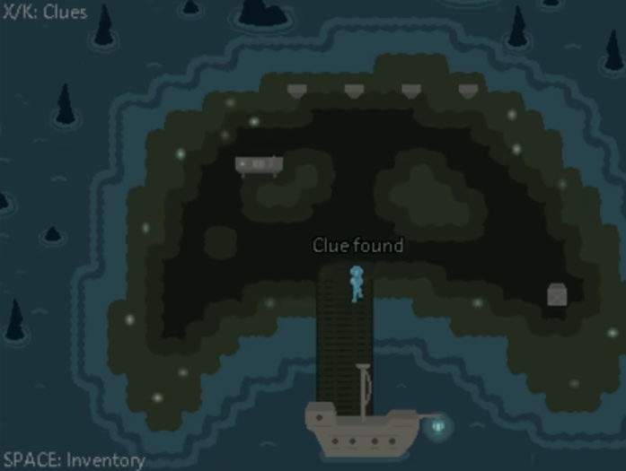
Team Size: 1
Publish Date: Apr 30, 2023
Average Session: 45 min.
Platforms: HTML5
Description: You find yourself hopelessly lost in a very dense, mysterious fog at sea. Explore its many isles, each filled with strange puzzles and ancient structures. Find various clues containing unsolved riddles, and find your way forward. The Fog holds many secrets. Don't give up hope, or the Fog might claim you... The glowworms will show the way.
Misteryium
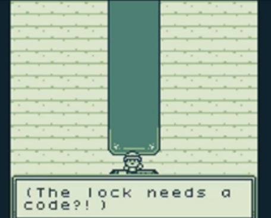
Team Size: 3
Publish Date: Jan 15, 2021
Average Session: 30 min.
Platforms: HTML5, Gameboy
Description: Luke is now going to explore the most known abandoned mansion around the city. But this time things aren't the same. This particular mansion feels way different from any other than he had ever explored until now. He now finds himself locked and needs a code to escape from the mansion. The more he explores the stranger things become.
Diana’s Lyre
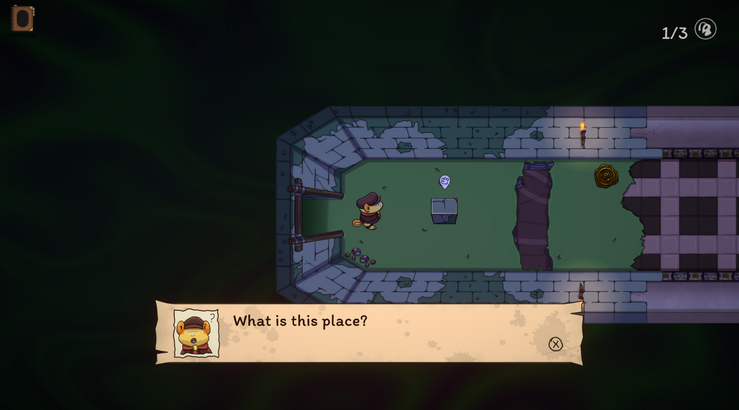
Team Size: 3
Development Time: 5 months
Publish Date: Jul 16, 2022
Platforms: PC(Windows)]
Description: The story starts with an old rumor. This rumor says that a legendary lyre from the goddess Diana is still hidden away in a mysterious catacomb under the Temple of Diana. This story was passed down from generation to generation in Évora, and after many years, a curious aspiring archeologist decided to take on the challenge of solving this rumor. Can you help our little toad get through many puzzles and discover the hidden lyre?
Stranded With You
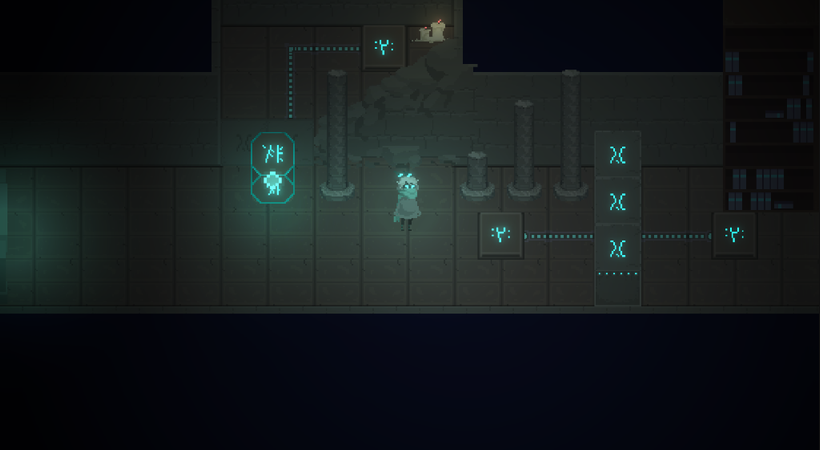
Team Size: 6
Development Time: 7 weeks
Publish Date: Nov 28, 2022
Platforms: PC(Windows)
Description: A world ravaged by an unknown disaster. As nature reclaims the remnants of a once grand civilization, you play as a wanderer that scavenges all they can find, only to one day stumble upon a strange creature in the ruins of a temple. Now you must attempt to reunite this strange creature with its kind and learn to use the abilities that it has granted you.
Game Narrative
In a fantasy world, where little people live inside objects, Sara’s home is a Boombox. Sara, a child that always lived inside a boombox, one day is shocked by the realization that her precious music has STOPPED! The boombox is now broken.
Inspired by the 80s hip hop scene, dive inside one of the most iconic objects of the era and fix what's broken!
To read more about the game's narrative, make sure to read this analysis that explains it!Rational Game Design
Game Systems
As we know, our game is a puzzle adventure game. This means that the gameplay can be divided into two groups, the exploration, and the puzzle solving. These two groups also define the two game systems in our game; the exploration system and the puzzle system.
Let’s first dive into the exploration system and what defines it. As we can see in the image below, this system is defined by gameplay, mechanics, player skills, inputs, and atomic parameters.
The exploration system is defined by exploring the game space. The main mechanic is analysing the game space. The player skill required for this system is memorization, which is a mental skill; memorization is also the input with the number of elements to memorize as the atomic parameter.
The number of elements to memorize is related to the simplicity of the map and the movement in the map. The more complex the map is, which is defined by, the more rooms, secret rooms, and possible paths, the harder it is to memorize. And the same is said in relation to the movement in the map, if the player is going from room to room really fast it will be harder to remember the previous rooms.
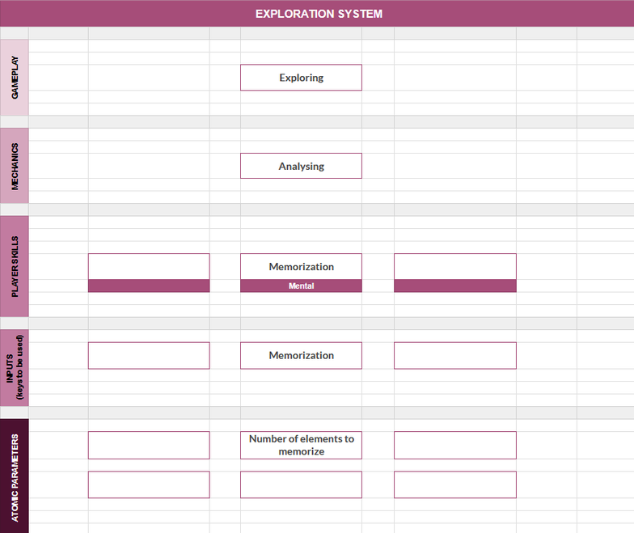
Unlike the exploration system, the puzzle system is more complex since it has two branches of player skills required, as we can see in the image below. This system is defined by the puzzle solving that is done by using the pushing & pulling mechanic.
There are two player skills required for this system, balancing decisions and dexterity. The inputs for each of these are, respectively, decision making, and J+Arrow Keys or E+AWSD.
Decision making has two atomic parameters, number of choices and validity ratio. The number of choices is related to the amount of boxes existent per puzzle. In other words, the more boxes that need to be put in an objective to clear the puzzle, the harder it is to complete.
The validity ratio is related to the incorrect options of solving a puzzle. In other words, the more boxes that exist that are just decoy, the harder it is to solve the puzzle.
Dexterity only has one atomic parameter that is the number of simultaneous inputs. This is related to the amount of keys that you have to press at the same time to get the box in the correct objective.
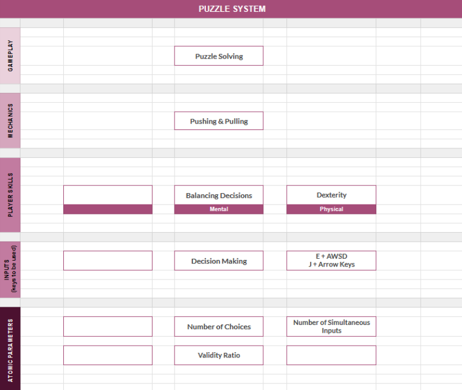
In conclusion, these are both of the game systems existent in our game, they define the gameplay and how hard or easy a level is to complete.
Ingredients
To help with the development of this game I made some ingredients to help my team in the process. These ingredients are basically guidelines for the game elements. For example, how tall is the main character? How tall should the trees be in comparison? Etc…
In the images below you can see a few examples of these ingredients I made:
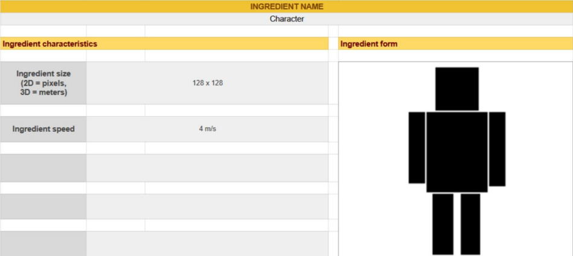
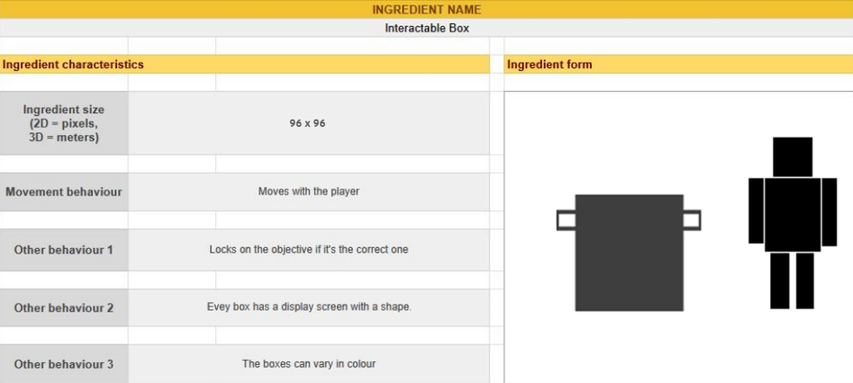
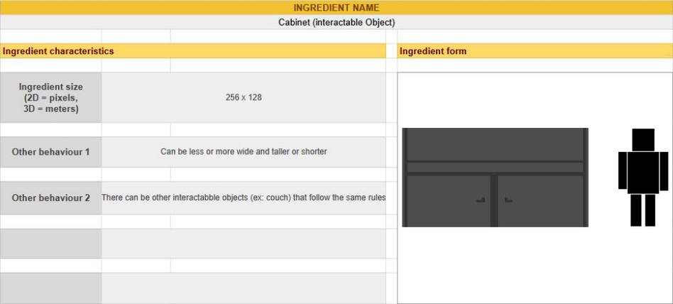
Signs and feedback
Now that we have defined our game ingredients, let's take a look at the signs and feedback related to these.
The first signs and feedback we will be overviewing will be the player character’s one. As we can see in the image below, the signs and feedback displayed are related to the exploring system.
As we can see, the feedback during action (while exploring) is characterized, in the sound aspect, by the character footsteps; and in the visual aspect, by the player walking animation and the camera following the player.
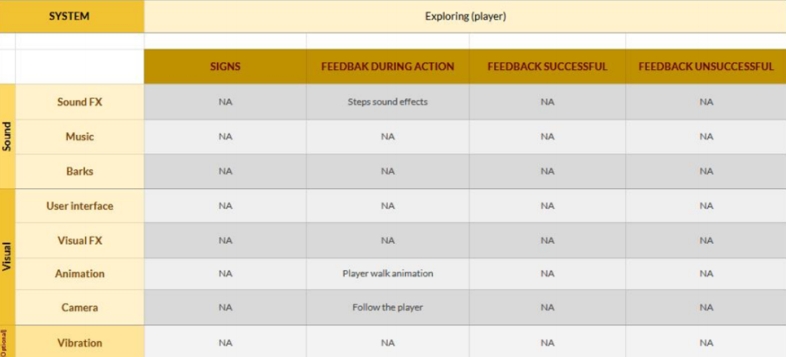
The second signs and feedback we will be overviewing will be the door one. As we can see in the image below, the signs and feedback displayed are related to the exploring system.
As we can see, the signs are characterized, in the visual aspect, by the next section having a fog of war.
The feedback successful (while exploring) is characterized, in the sound aspect, by the sound of a heavy door opening; and in the visual aspect, by the fog of war disappearing and the next section becoming visible; and by the animation of the door opening. Although, the animation we ended up not applying in our game due to lack of time.
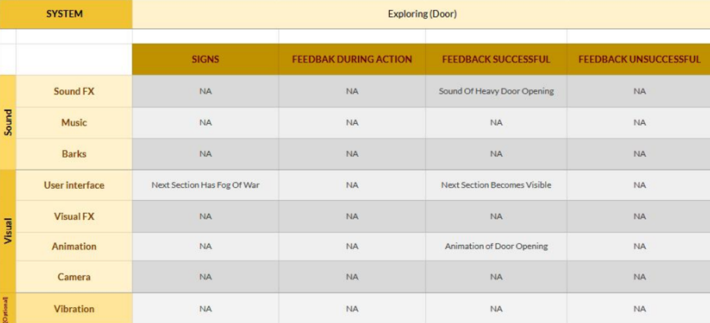
The third signs and feedback we will be overviewing will be the interactable box one. As we can see in the image below, the signs and feedback displayed are related to the puzzle solving system.
As we can see, the signs are characterized, in the visual aspect, by an UI element showing up if the player is close to the box. This UI element will be displaying which key the player needs to press to interact with the box.
The feedback during action is characterized, in the sound aspect, by the sound effect of the box being dragged on the floor; and in the visual aspect, by the player animation changing to pushing the box.
The feedback successful is characterized, in the sound aspect, by the sound effect of the box in the correct place; and in the visual aspect, by the box’s display lighting up.
The feedback unsuccessful is characterized, in the sound aspect, by the sound effect of the box in the incorrect place; and in the visual aspect, by the box’s display staying turned off.
The fourth signs and feedback we will be overviewing will be the interactable object + dialogue box UI one. As we can see in the image below, the signs and feedback displayed are related to the exploring system.
As we can see, the signs are characterized, in the visual aspect, by an UI element showing up if the player is close to the object. This UI element will be displaying which key the player needs to press to interact with the object.
The feedback during action is characterized, in the sound aspect, by the sound effect of the dialogue box pop up/selection; and in the visual aspect, by the Dialogue box showing up on the screen.
The fifth signs and feedback we will be overviewing will be the puzzle complete achievement one. As we can see in the image below, the signs and feedback displayed are related to the puzzle solving system.
As we can see, the feedback successful is characterized, in the sound aspect, by a notification sound effect; and in the visual aspect, by the achievement showing up on the screen.
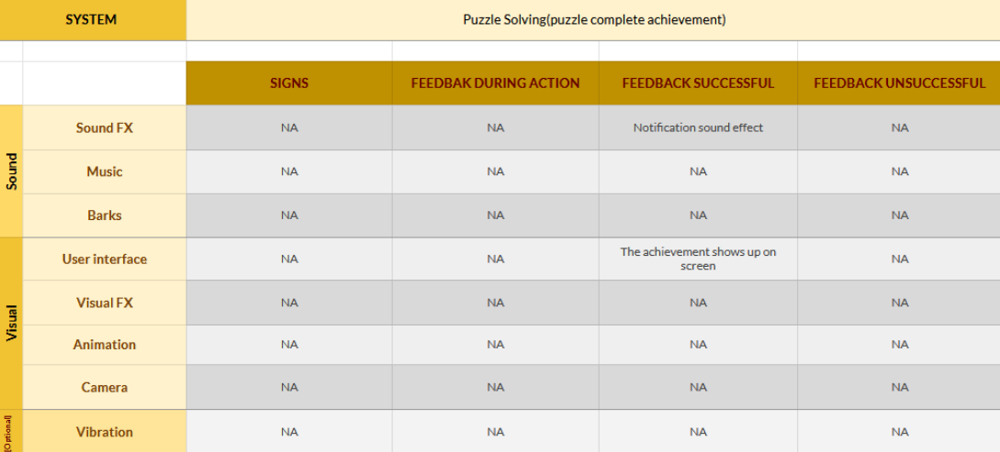
The sixth signs and feedback we will be overviewing will be the new area achievement one. As we can see in the image below, the signs and feedback displayed are related to the exploring system.
As we can see, the feedback successful is characterized, in the sound aspect, by a notification sound effect; and in the visual aspect, by the achievement showing up on the screen.
The seventh signs and feedback we will be overviewing will be the story progress achievement one. As we can see in the image below, the signs and feedback displayed are related to the exploring system.
As we can see, the feedback successful is characterized, in the sound aspect, by a notification sound effect; and in the visual aspect, by the achievement showing up on the screen.
The eight signs and feedback we will be overviewing will be the puzzle progress achievement one. As we can see in the image below, the signs and feedback displayed are related to the puzzle solving system.
As we can see, the feedback successful is characterized, in the sound aspect, by a notification sound effect; and in the visual aspect, by the achievement showing up on the screen.
Level Design
Level Design Flow - Exploration System
Now we will be discussing level design flow. The level design flow is heavily connected to the game systems and the atomic parameters.
In the image below we can see the level flow design matrix related to the exploration system. In the section of atomic parameters available we can see that we only have one atomic parameter with three difficulties. This is because this game system only has one atomic parameter.
Due to the fact that there is only one atomic parameter, the simple conjugation matrix would be the only existent conjugation matrix. Therefore the complex conjugation matrix is not needed for this system. Lastly, we see that the final possible ap matrix consists of a total of 3 possibilities.
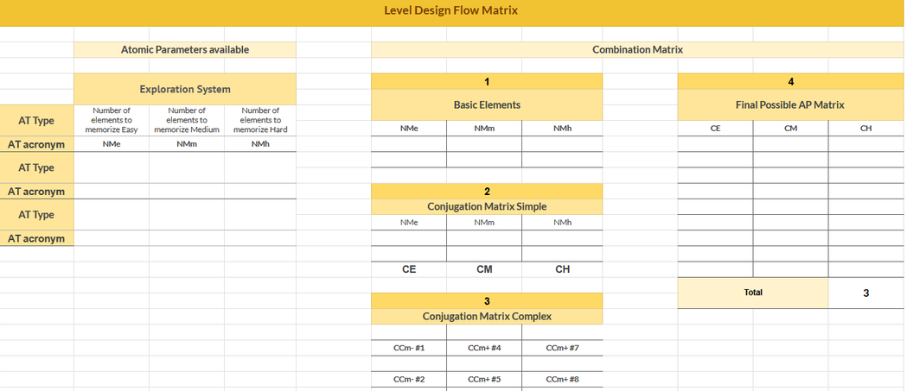
Lets now explain how these combinations translate to in game levels and level design. In the image below we have the example of the CE possible matrix in our game, this is section 1 of our game.
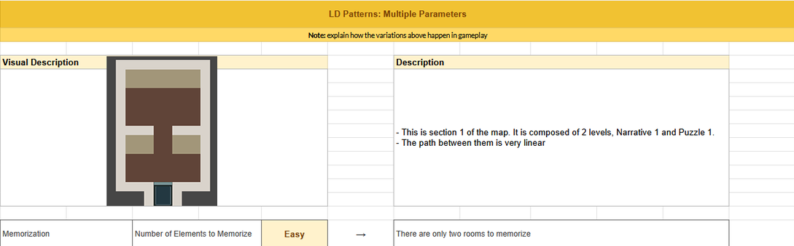
In the image below we have another example of the CE matrix in our game level design. This is section 2 of our game.
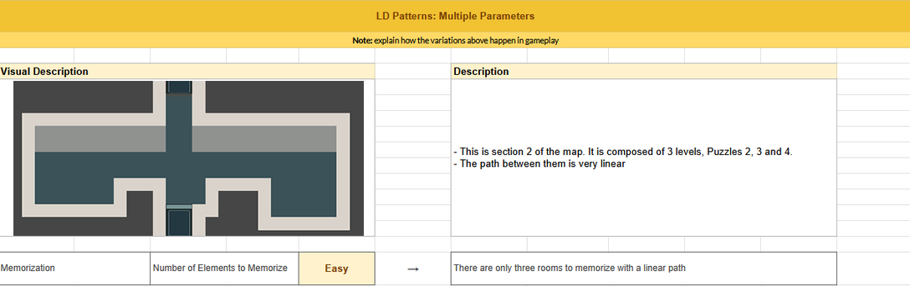
In the image below we have the example of the CM matrix in our game level design. This is section 3 of our game, the last section of our vertical slice.
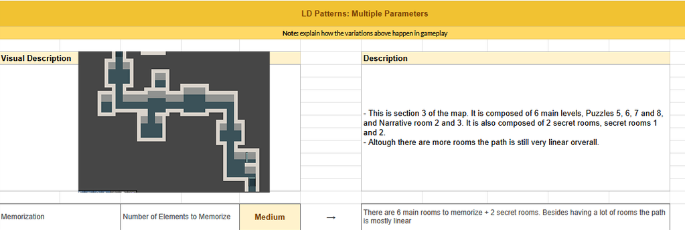
Lastly, we have the Level design flow chart related to the exploration system, displayed in the image below. As we can see our level design in terms of exploration is rather easy.
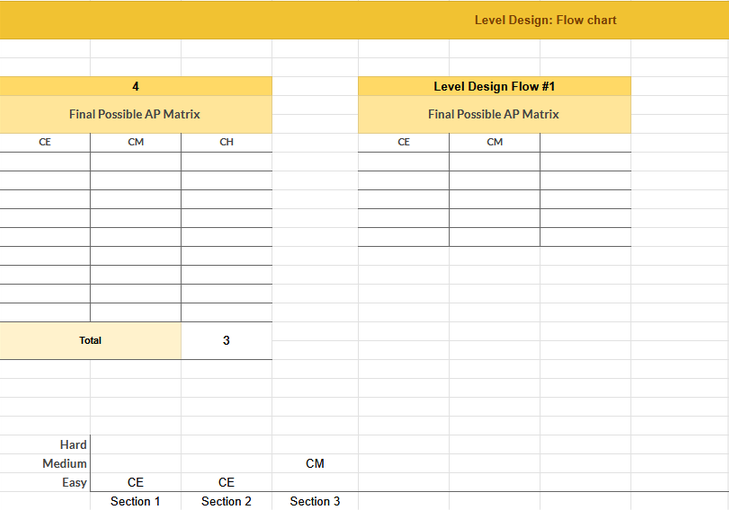
Level Design Flow - Puzzle System
Now let’s discuss the puzzle system and its level design. In the image below we can see the level design flow matrix related to the puzzle solving system. Unlike the previous system, this system has more than one atomic parameter. In fact, it has three, the number of choices, the validity ratio, and the number of simultaneous Inputs. As we can see in the Atomic parameters available section, each of these atomic parameters has 3 sets of difficulty, leaving us with 9 basic elements. This means that, after all the combinations of the complex combination matrix and the simple conjugation matrix, the final possible ap matrix has a total of 27 possibilities.
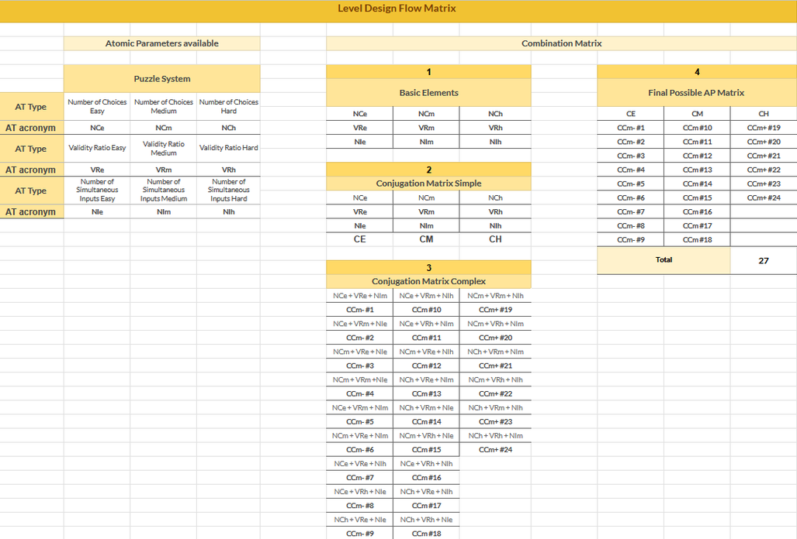
Now that we know what all the matrixes related to this system are, we will take a look at how they are implemented in our actual game. In the image below we have the puzzle 1 level. This level is defined by the CE matrix due to the reasons explained in the picture. Therefore, this is an easy puzzle. The green arrow displays the movement the box has to go through.
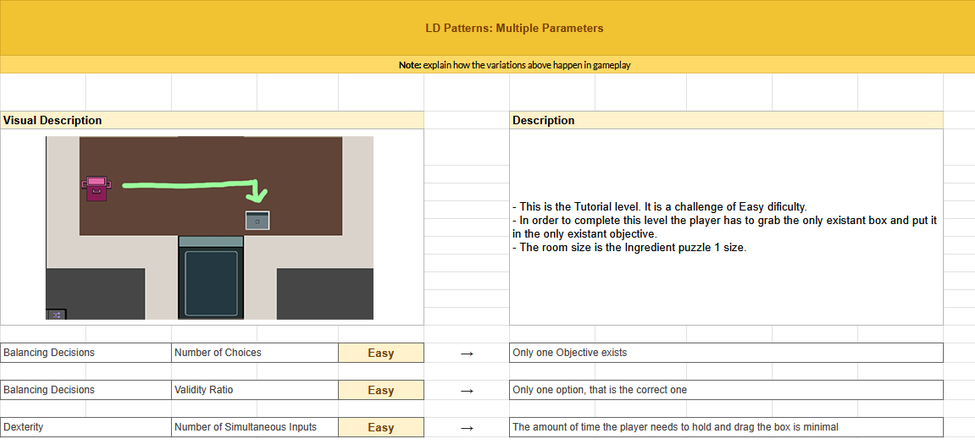
In the image below we have the puzzle 2 level. This level is defined by the CCm- #1 matrix due to the reasons explained in the picture. Therefore, this is an easy puzzle. The green arrow displays the movement the box has to go through.
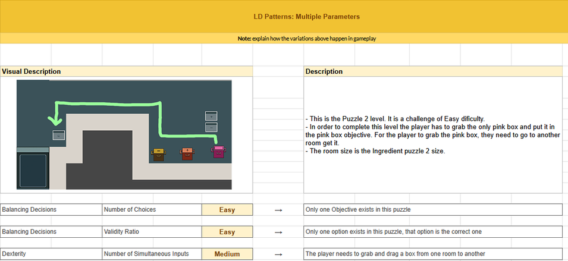
In the image below we have the puzzle 3 level. This level is defined by the CCm #15 matrix due to the reasons explained in the picture. Therefore, this is a medium puzzle. The arrows display the movement the boxes have to go through in order to get to their respective objective.
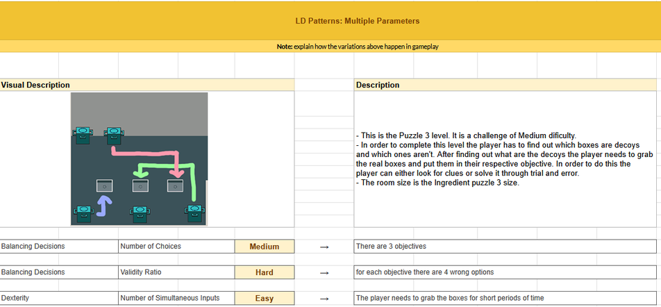
In the image below we have the puzzle 4 level. This level is defined by the CE matrix due to the reasons explained in the picture. Therefore, this is an easy puzzle. The arrows display the movement the boxes have to go through in order to get to their respective objectives.
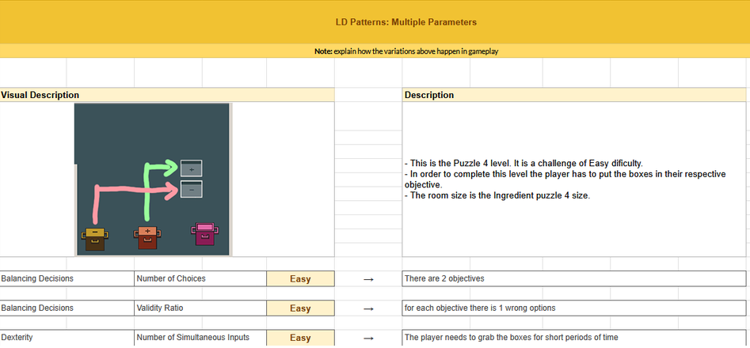
In the image below we have the puzzles 5, 6 and 7 levels. These levels work as one singular puzzle since they are all connected. This puzzle is defined by the CCm+ #24 matrix due to the reasons explained in the picture. Therefore, this is a hard puzzle. The arrows display the movement the boxes have to go through in order to get to their respective objectives. And in the switches the arrows display the correct side of the switch.
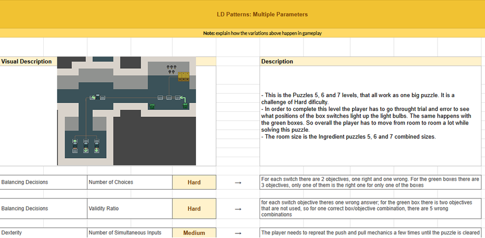
In the image below we have the puzzle 8 level. This level is defined by the CCm- #5 matrix due to the reasons explained in the picture. Therefore, this is an easy puzzle. The arrows display the movement the boxes have to go through in order to get to their respective objectives.
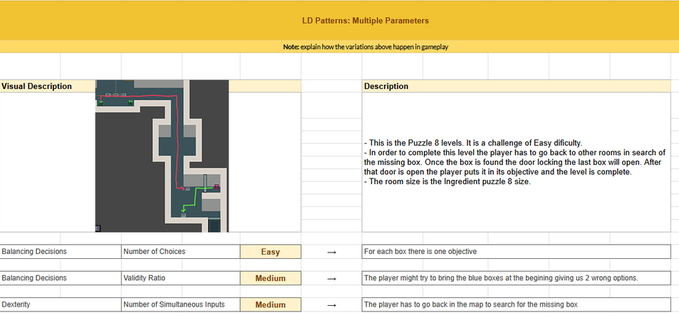
Now that we have established the difficulty of each puzzle we can see in the image below the final flowchart as well as the used AP Matrix in our game.
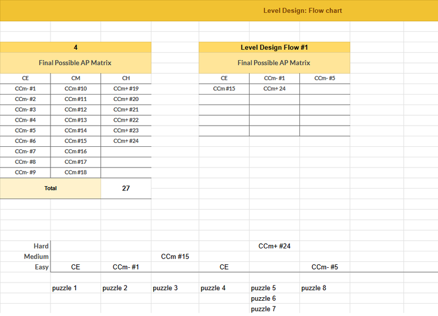
Gameplay Loop
Due to the nature of our game being a puzzle adventure game with focus on exploration, our gameplay loop is mostly defined by exploration. In the image below we can observe just that clearly, that every action or chain of actions will loop back to the exploration of the game space.
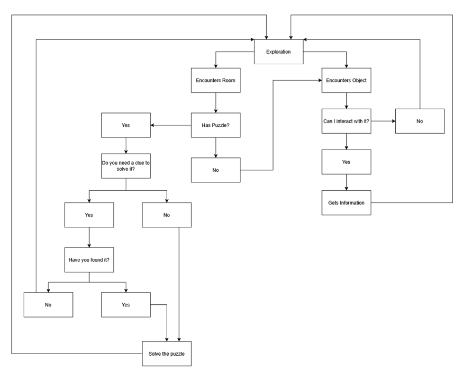
The loop starts with exploration, when exploring the player can either encounter a room or an object. Upon encountering an object, if the object is not intractable the player keeps exploring; but if the object is intractable the player gets some kind of information, this can be either narrative context or puzzle clues.
If, when exploring, the player encounters a room, the room can either have a puzzle or not. If the room doesn’t have a puzzle, the room will have an object. But if the room has a puzzle, the puzzle can be either intuitive and the player can solve it and continue exploring; or in order to complete it the player might need a puzzle clue.
If the puzzle needs a clue the player either already has it and continues exploring after having solved it; or the player hasn’t found the clue yet. If that’s the case the player needs to explore and interact with objects until they find it.
Retention Loop
In order for our game to have an effective retention loop it has to be done to please our target audience. And that’s precisely what we did with two loops we made; two loops because of the two possibilities when exploring, encountering an object and encountering a room.
As we know the achievers player profiles like to achieve the game objectives quickly and fully. The retention method we chose to implement in our game was the completion achievements.
As for the explorer player type, we know that they focus on exploring the game space and discover new areas. The form of retention we chose to implement in our game was exploration achievements and secret rooms.
Loop 1
The first loop we did was the one related to finding rooms when exploring, you can see it in the image below. The loop starts with exploring, and when exploring the player finds a room; after finding a room the player will get the “New Area Achievement”, this achievement will be a retention method for the explorers player type.
After finding a new room the player can find a puzzle. And after solving the puzzle the player will get two achievements. The “Puzzle Solved Achievement” will give the player context of the component that they just restored. After that achievement the player will receive another one, this one is more like a status update. The “Progress Update” will give the player context on how many puzzles they have already solved and how many more they have to solve. Both these achievements work as a retention method for the achievers player archetype.
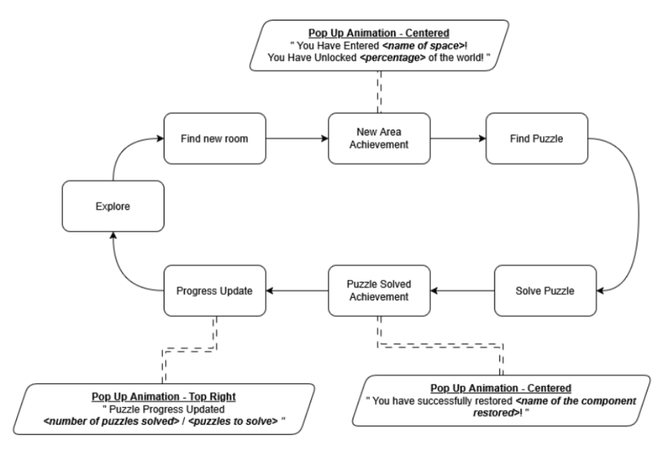
Loop 2
The second retention loop in our game is related to the object interaction, you can see the loop in the image below. The loop starts with exploring, and when exploring the player might find an intractable object. When they interact with this said object for the first time they will get new information and a new achievement. This achievement is the “Story Achievement”, this achievement will give context on the amount of the game narrative that was already unlocked. This achievement works as a retention method for the explorer archetype.
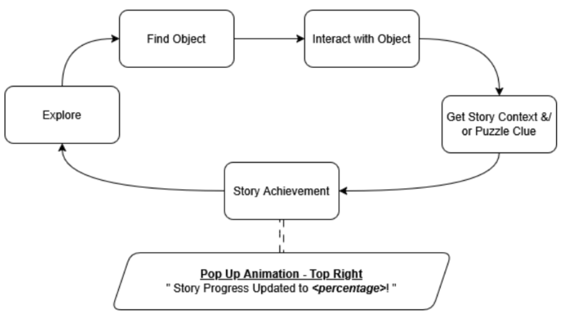
In conclusion, our retention loops are made so that both player types in our target audience feel satisfied and rewarded after performing an action in the game. If the retention loop works the player shouldn’t feel bored during their play session and eventually finish the game.
Wanna Know More About This Project?
Check Out Our Game Page!